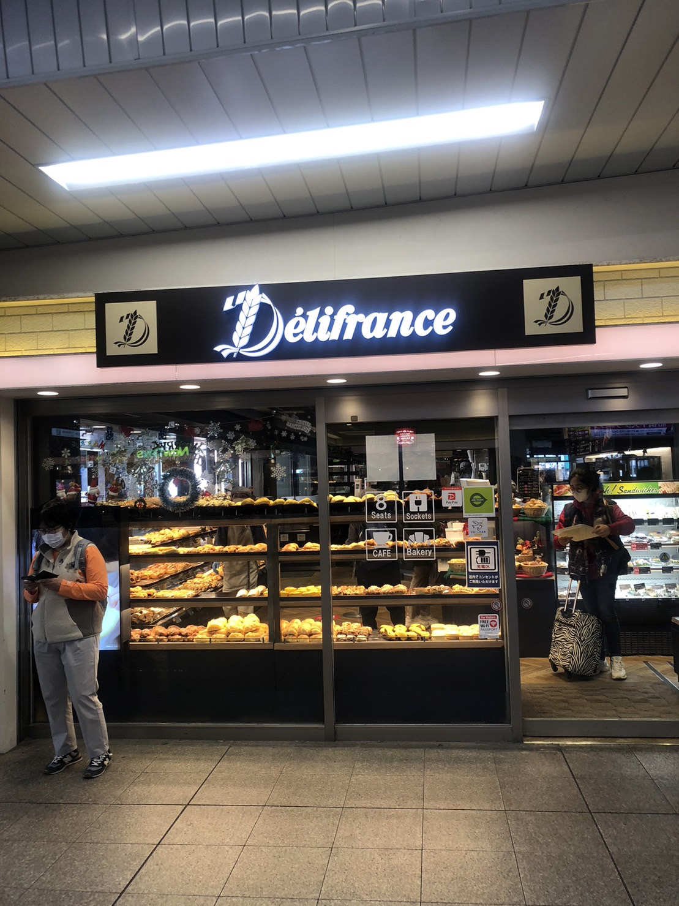
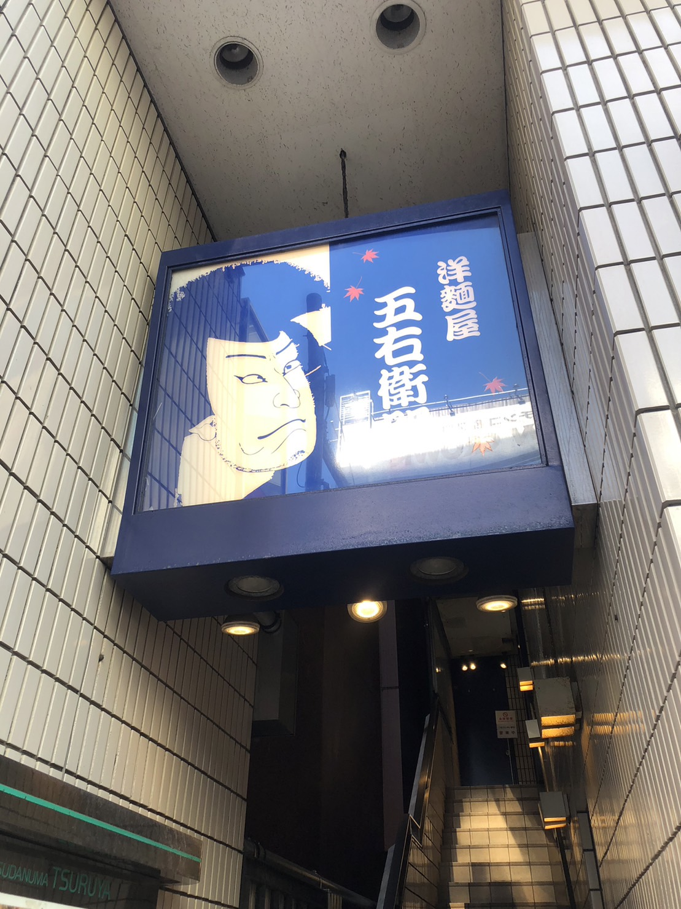

| 特徴 | JR津田沼駅の改札付近にあるパン屋さんで、22時まで営業しています。 他のパン屋さんにはないような珍しいパンが置いてあるのが魅力。 店内飲食も可能で、気軽にくつろげる心地良い雰囲気もおすすめです。 |
| 住所 | 275-0016 千葉県習志野市津田沼1丁目1-1 Perie津田沼エキナカ内 |
| 電話番号 | 047-403-5033 |
| 営業時間 | 月～金 7:00-22:00 土・祝日 7:00-21:00 日 8:00-21:00 ＊(ラストオーダー閉店30分前) |

| 特徴 | JR津田沼駅の南口の階段を下ってすぐのところにある大人気チェーン店。 二階まで席があるため、家での勉強がはかどらない人の勉強場所におすすめ。 安い値段でボリューム抜群のハンバーガーが食べられます。 |
| 住所 | 275-0016 千葉県習志野市津田沼1丁目1-1 JR東日本ホテルメッツ津田沼１F |
| 電話番号 | 047-411-4556 |
| 営業時間 | 日～土・祝日 7:00-22:00 ＊(モバイルオーダー 7:00-21:00) |

| 特徴 | JR津田沼駅から徒歩3分の場所にあるパスタ専門店。 一般的なパスタだけでなく、ここにしかないような珍しい種類のパスタもたくさんあります。 セットメニューも豊富なため、おなか一杯食べることができます。 |
| 住所 | 275-0016 千葉県習志野市津田沼1丁目2-19 つるやビル2階 |
| 電話番号 | 047-493-7673 |
| 営業時間 | 月～日・祝日 11:30-21:30 ＊(ラストオーダー閉店30分前) |